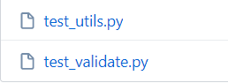
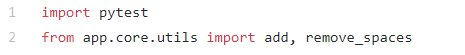
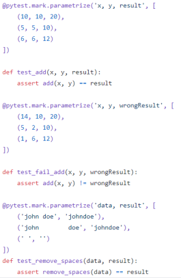
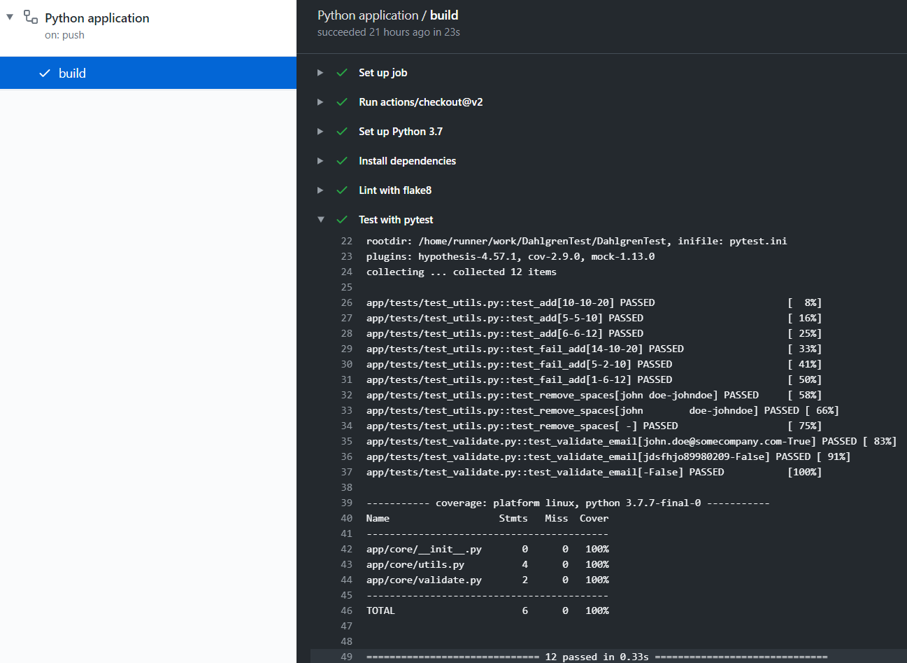

Creating a Basic Python Unit Test Using Pytest
- Start by creating a test file with the formatting test_(your .py file name).

- In your test_*.py file, you need to 'import pytest' and use 'from' the filre testing
and import the functions you will be using.

- Next you set up the parameters for the test and set up the assert statement.

- If you got everything correct, go to the actions page. It should show all of your tests
and whether the test passed or failed. Here is an example of tests that ran and passed.

- If you make a syntax error anywhere in the code, not just in test_*.py files, the linter
flake8 will catch it and prevent the code from building. Here is an example of what a syntax
error looks like in the actions page.